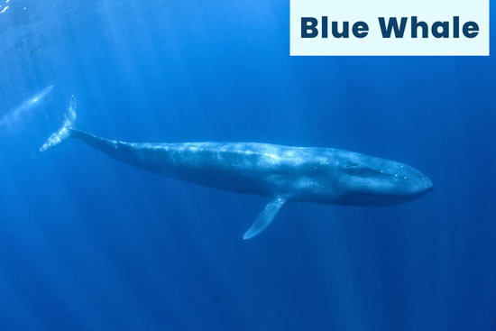
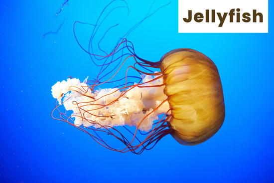
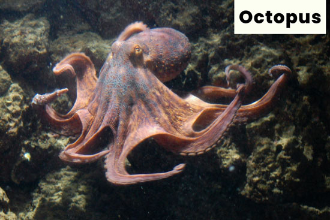
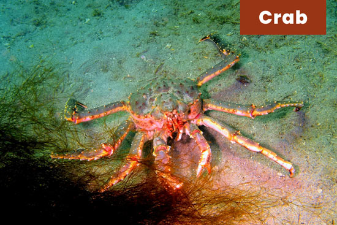
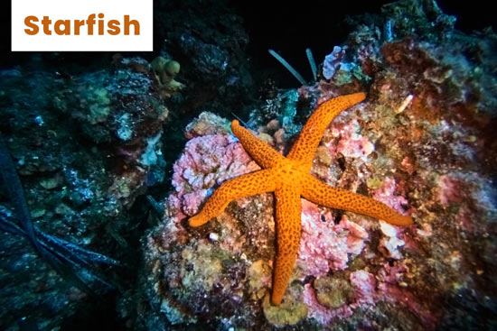
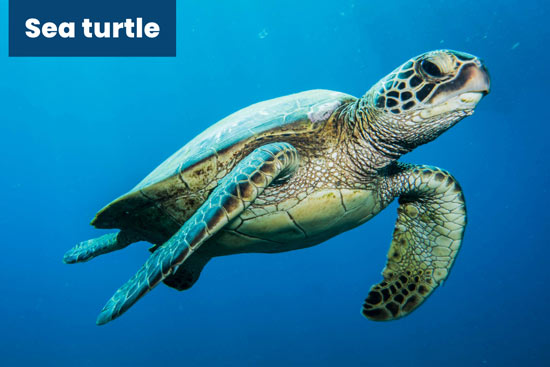

Whales
whale and humpback whale, which filter small organisms like krill from the water using baleen plates. Toothed whales (Odontoceti) like orcas (killer whales) and sperm whales, which have teeth and hunt fish, squid, and other marine life. Whales play a vital role in the ocean ecosystem, and some species are among the largest animals ever to have lived on EarthBlue Whale Largest animal on Earth (up to 100 feet, 180 tons). Eats up to 4 tons of krill per day using baleen plates. Gentle and slow-moving. Orca (Killer Whale) Actually a large dolphin and a toothed whale. Smart, social, and lives in pods. Top predator—hunts fish, seals, and even whales. Fun Fact Humpback whales sing complex songs that may help with mating or communication.
Dolphins
Dolphins
Marine mammals known for their intelligence and playful behavior. Belong to the toothed whale family (like orcas). Use echolocation to hunt and navigate. Live in social groups called pods. Communicate with clicks, whistles, and body movements. Common species include the bottlenose dolphin and spinner dolphin.
Jellyfish
Jellyfish.Invertebrates with soft, jelly-like bodies and long stinging tentacles.Have no brain, heart, or bones, but can sense light and move using water currents. Use stinging cells (nematocysts) to catch prey and defend themselves. Found in oceans all over the world, from surface waters to deep sea. Some species can glow in the dark (bioluminescence), and a few are even dangerous to humans.
Octopus
Octopuses are soft-bodied, eight-armed mollusks belonging to the class Cephalopoda. They are known for their intelligence, ability to camouflage, and unique movement using jet propulsion. Octopuses have three hearts, blue blood, and can squeeze through tiny spaces due to their lack of bones. They are mostly solitary and live in oceans around the world, often hiding in crevices or burrows. Would you like fun facts or more detail about their behavior or biology?
Crab
Crabs are crustaceans with a hard shell and ten legs, including two strong claws used for feeding and protection. They typically walk sideways due to the structure of their legs. Crabs can be found in oceans, freshwater, and even on land. They breathe through gills, and some land species have adapted to survive out of water. To grow, crabs must molt, shedding their old shell. There are over 6,000 known species of crabs, and they are omnivores, eating both plants and animals.
Starfish
Starfish, also called sea stars, are marine animals with five or more arms and a tough, spiny skin. They have no brain or blood, but use a water vascular system to move and eat. Starfish can regenerate lost arms and have tiny tube feet on their underside to help them walk and grip surfaces. They live on the ocean floor and feed mainly on shellfish like clams and mussels.
Sea turtles
Sea turtles are large marine reptiles known for their long migrations and hard, protective shells. There are seven species, and they primarily live in warm ocean waters. Sea turtles are excellent swimmers and can dive deep to find food, such as jellyfish, seagrasses, and crustaceans. They return to the beaches where they were born to lay eggs. Unfortunately, many sea turtle species are endangered due to threats like habitat loss, pollution, and poaching.
